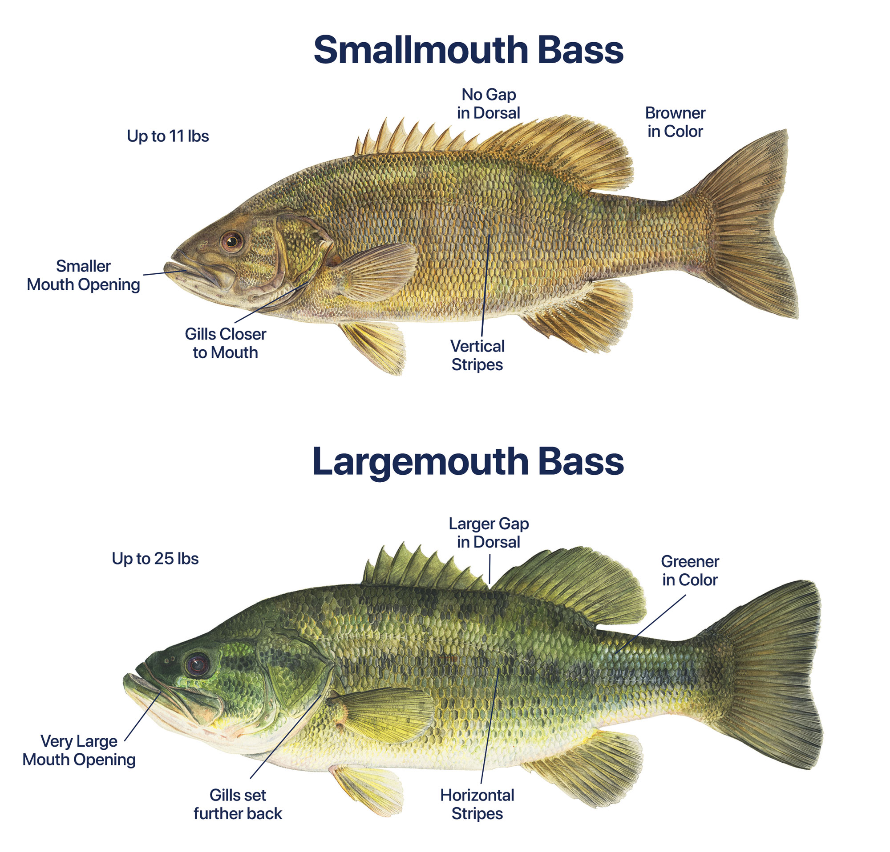

Brief Info on Bass Fishing
Bass Fishing
Tournament Fishing
Bass have a lateral line to feel vibrations in water.
There is largemouth and smallmouth bass.

Comparison of both LMB and SMB - LMB tend to be green while SMB are brown to bronze colored.